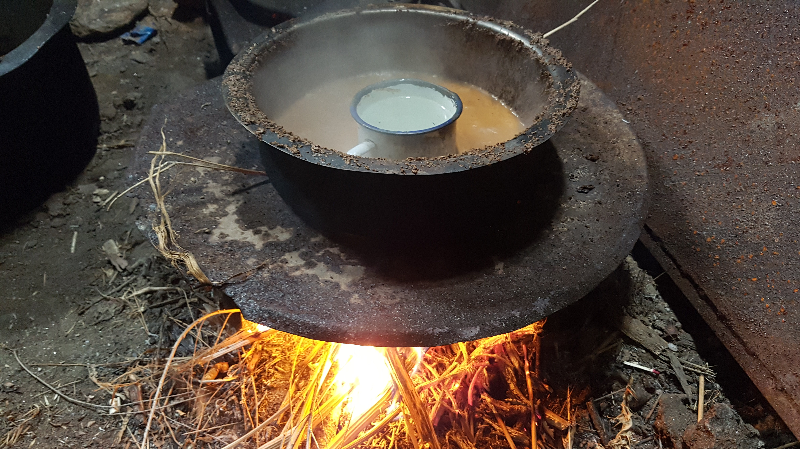
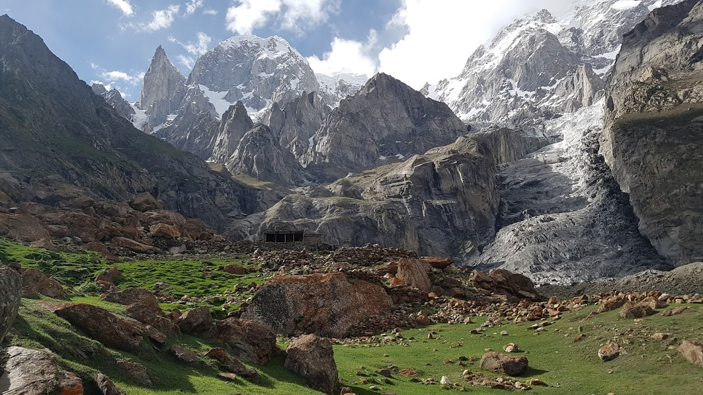
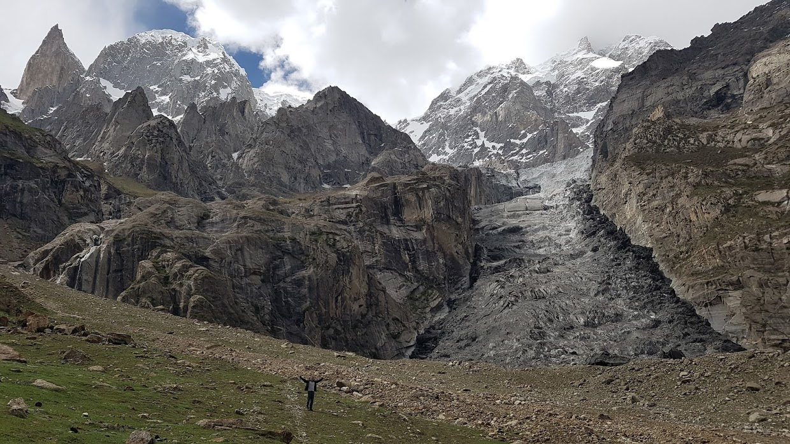

잘 알려지지 않은 최고의 트레킹, Ulter 트레킹
2017년 05월 27일
파키스탄
오늘은 Ulter 트레킹을 하는날이다. 원래는 어제 밤에 가지가 가이드 정보를 주기로 했는데 안줘서 그냥 잤다. 오늘 아침 일찍 트레킹을 떠나야 하는데 리셉션은 계속 문이 닫혀있다. 아직 가이드도 정해지지 않았고 아침은 8시가 넘어간다. 오늘 트레킹을 못할 수 도 있겠다는 생각이 들었다. 나는 그냥 일기나 썼다.
일기를 한참 쓰는데 폰이 꺼졌다. 한 30분 동안 쓴일기를 날렸다. 짜증이 나서 더이상 일기를 쓸 수 없었다. 어제 일기는 그래서 대충 쓰고 끝냈다. 여행중에는 그리고 남은 여생을 살 동안 뜻대로 되지 않는 일이 많이 일어날 텐데 그때마다 짜증내고 화를 내는게 맞는건가? 잘 모르겠다. 이 얘기를 S와 J에게 했더니 웃었다. 나는 화가 치미는데 남의 일이라고 대수롭지 않게 여기는것 같아 더 화가났다.
그러다가 가이드가 나타났다. 그런데 가격이 1500루피라고 한다. 어제까지만 해도 500~600루피 정도의 가격으로 가이드를 고용할 수 있다고 했는데 잠시 고민 끝에 그래도 하루 전체를 같이 다니는 비용인데 비교적 저렴하다는 생각이 들어서 그렇게 바로 출발하기로 했다.
S는 트레킹을 혐오해서 가지 않는다고 했고 J와 같이 출발했다. 운좋게도 가지가 우리를 가이드하기로 했다. 원래 가이드는 대신 하루 호텔 로비를 지키기로 했다. 서로 job을 스위칭 한것이다. 무뚝뚝해 보였던 가이드가 아니라 그동안 많이 친해진 가지와 같이 트레킹을 할 수 있어서 신났다.
나는 안나푸르나 써킷 트레킹을 16일동안 마치고 더 이상 트레킹은 하지 말아야겠다고 생각했다. 지치고 힘이 들었고 그리고 무릎 상태가 많이 나빠졌기 때문이다. 그런데 오늘 또 트레킹을 하면서 기뻐하는 내 모습을 보니 신기 했다.
1000루피 짜리 입장료를 걷는 Baltit Fort (훈자 성) 을 배경으로 하는 멋진 경치를 시작으로 우리는 트레킹을 떠났다. 거대한 바위 투성이를 넘기도 했고, 고운 모래 투성이를 지나기도 했다. 경사도 무척 가파랐다. 여기를 혼자 왔다면 정말 후회 했을지도 모른다. 안나푸르나 처럼 길이 잘 만들어져있지 않았다. 오로지 현지인만 알수있는 길이었다. 가이드를 고용한것이 정말 잘한 일이라는 생각을 했다.
가는 길에 빙하를 만났다. 검은색 빙하였다. 훈자 마을 검은물의 정체다. 난생처음 가까이서 보는 빙하가 무척 흥미로웠다. 나는 빙하는 전부 흰색일줄만 알았는데 검은색 빙하가 있다는 사실도 처음 알았다. 멀리 서 보이는 빙하의 모습은 아무리 봐도 바위같았다. 도저히 차가운 얼음덩어리 처럼 보이지 않았다. 그리고 이 날씨 자체가 얼음이 얼정도로 추운 날씨도 아니고 심지어 햇빛이 엄청 강해서 더운데 얼음이 있다는 사실이 믿기지 않았다. 나는 빙하는 만져보고 싶었다. 눈으로 직접 확인해 보고 싶었다. 그래서 가지에게 가능하냐고 물어봤더니 조금만 더 올라가면 만져볼 수 있다고 했다.
곧 더 올라가서 반대편 길에 있는 빙하에 가보자고 한다. 나는 처음에 올라가는 길에 만질 수 있는줄 알았는데 그게 아니라 조금 위험한 길을 타고 올라가야 만질 수 있었다. 내가 만지고 싶다고 했으니 어쩔수없이 따라갔다. 길은 생각보다 위험하고 미끄러웠다. 그렇게 예상보다 고생을 한 끝에 빙하 앞에 도착했다. 그리고 바로 손으로 만졌다. 진짜 얼음이었다. 엄청나게 차가웠다. 얼음 사이사이 검은 모래와 자갈들이 있어서 그런색을 띈것이었다. 일부 얼음을 깨니 투명한 얼음이 부셔져 나왔다. 진짜 빙하가 맞았다.
나는 태어나서 처음 만져본 빙하에 무척 고무되었다. 트레킹 도중 이런경험을 할 수 있다는 사실에 너무 기뻤다. 아무도 빙하를 만지러 이곳까지 온사람은 없었을 것이다. 빙하 가까이 다가가 손으로 만져본 경험은 내인생의 가장 특별한 경험중 하나로 자리잡을 것 같다.
J는 힘들었는지 빙하가 있는곳까지 오지는 않고 반대편에서 기다리고 있었다. 그리고 J가 빙하 가까이에 있는 우리를 찍어줬다. 사진속의 우리를 보니, 빙하는 생각 보다 엄청나게 컸다. 멀리 있어서 그 크기가 짐작이 가지 않았었던 것이다.
현지인 가이드와 동행해서 좋았던 점은 지나가면서 각종 풀 향기를 맡게 해줬다는 점이다. 다양한 종류의 허브 들이 있었고 또 어떤 풀은 씹어보니 사과맛이 났다. 과일맛 채소라니.. 내가 먹어본 채소중 가장 맛있는 채소였다. 지나가면서 현지인만 알수있는 튼튼한 나무가지를 꺾어 등산 스틱도 만들기도 했다. 히말라야에서 만들어진 각종 특이한 암석들도 구경 시켜줬다. Gemstone (제임스톤?) 이라고 부르는것 같았다. 이 돌로 사업을 하는 현지인들도 꽤 많은것 같았다.
가지가 쪼개줬던 빙하 조각. 훈자 검은 물의 비밀이 숨어있다. 자세히 보면 검은색 물방울들이 얼음속에 숨어있는데 이것이 검은 물의 정체이다. 그 물방울 안에는 각종 미네랄이 있으며, 훈자 마을 사람들의 장수 비결이라고 한다.
거대한 빙하와 우리들
올라가는 길은 험했으나. 그동안 안나푸르나로 다져진 내 몸은 그렇게 힘들게 느껴지지는 않았다. 반면 J는 무척 힘들어했다. 확실히 그동안 체력이 많이 좋아진것 같았다. 올라가는 길의 압도적이고 특이한 광경은 지금까지 만났던 히말라야의 모습과 천지 차이였다. 이곳은 가장 뛰어난 절경을 가진 트레킹 코스임이 분명하다.
거의 6시간만에 도착한 목적지의 모습은 더이상 지구의 모습이 아니었다. 우리가 올라간 코스는 거대한 계곡을 타고 올라간 것이었는데 그 계곡 상부에는 거대한 빙하가 자리잡고 있었다. 계곡 반대편에도 설산이 자리잡고 있고 Ulter목적지에는 울터피크, 훈자피크, 레이디 핑거로 불리는 뾰족한 봉우리도 있었다. 그 아래 바닥은 초록색의 잔디가 아름답게 깔려있는데 스위스 같았다. 훈자 마을보다 하얳던 구름과 더 짙푸른색하늘이 있었고 트래커들을 위한 작은 집과 절벽을 뚫고 쏟아지는 폭포, 그리고 풀속을 거닐던 야크들까지 한대 어우러진 절경은 환상적이었다. 심지어 사람이 아무도 없고 우리만 있었다!! 확실히 여행자가 거의 없는 지역이라 그런것 같다.
높은 피크 사이에 자리잡은 빙하가 정말 가까이 있는것 처럼 보였다. 그래서 가지와 나는 그 빙하로 좀 더 가까이 가보기로 했다. 나는 그 크기가 도저히 가늠이 되지 않았다. 너비가 한 수백미터정도 되지 않을까? 눈으로 보기에는 한 수십미터 정도로 보이는데 말이다. 3000미터 고지고 겨울도 아니었지만 빙하가 버젓이 있었고, 그 반대편 계곡물 상부에는 눈도 있었다. 신기했다.
이곳에는 트래커들을 위한 집이 있어서 1박을 할 수가 있다. 나는 트리운드 때처럼 텐트를 가져오지 않은것을 땅을치고 후회했다. 이곳에서 1박을 하는 기분은 어떨까? 미친듯이 행복할것 같았다. 깍아지는 바위 피크에 둘러쌓여 별빛에 반짝이는 빙하를 보는 기분을 어떨까. 만약 달이 떠있었다면 정말 환상적인 풍경이 연출될것이 눈에 선했다. 정말로 아쉬웠다.
우리는 그 집에서 점심식사를 했다. 미리 삶아온 계란과 빵으로 배를 채웠다. 그 집에는 불을 뗄 수 있는 아궁이도 있었는데 직접 불을 지펴서 짜이도 데우고 커피물도 끓였다. 물론 성냥의 도움을 받았지만 직접 내손으로 불을 지피니까 기분이 너무 좋았다. 직접 불을 만들고 물을 끓이는 행위가 또 다른 자유로움을 느끼게 해주었다.

지푸라기를 이용해 불을 만들어서 짜이도 데우고 커피물도 끓이다.
살아있음을 즐긴다.
생명체의 본질은 살아있음이다. 그것이 지구상의 모든 생명체가 자살하지 않고 생존하려고 노력하는 이유이다. 일부 염세주의 철학자들은 생명체는 죽음이 두려워 생존하려고 노력한다고 생각할지도 모르겠으나, 내생각은 다르다. 모든 생명체에게 환경을 극복하고 생존할 때 기쁨을 느끼는 방향으로 진화의 선택압이 있는것이 분명하다. 본인이 처한 환경에서 생존하는것 자체가 생명체에게 기쁨을 주는것이다. 기암 괴석과 빙하 그리고 깍아지는 절벽으로 이루어진 이 계곡을 올라가면서 내가 살아있음이 즐겁다는 생각을 했다. 나는 지구상의 모든 생명체처럼 지금 내게 주어진 환상적인 환경 속에서 살아있음을 즐기고 있었던 것이다. 앞으로 살면서 어떤 환경속에서 살아있음 자체에 감사하고 기쁨을 느끼며 살면 얼마나 그 인생이 행복할지 기분좋은 상상을 해봤다.
원래 이 트레킹 코스는 아침일찍 출발하고 점심을 지나서 하산해야한다. 우리는 출발을 9시30분에 해서 다소 늦었다. 벌써 3시가 넘었다. 밤이 어두워지면 위엄하기 때문에 바로 하산을 시작했다. 모든 하산이 그렇듯이, 내가 이런 절벽을 어떻게 올라왔나 싶었다. 바위 투성이에 미끄럽기까지 한 각종 버라이어티한 코스들을 다시 하산했다. 중간중간 이제 올라가는 팀들이 보였는데 모두 텐트를 가지고 올라가고 있었다. 여기서 1박을 할 모양인가보다. 너무 부러웠다.
가지가 이제 가파른 코스가 끝났다고 한다. 곧 마을 사람들이 만들어놓은 수로를 따라 깍아지는 절벽을 따라 걸었다. 낭떠러지는 수백미터 높이였을것이다. 위험했지만 재미있엇다. 점점 걸을 수록 보였던 훈자마을 전경. 그 낭떨어지에서 본 훈자마을의 절경은 정말 잊지 못할것 같다. 미친듯이 아름다웠다. 사진으로는 도처히 똑같이 담을 수가 없었다.
절대로 실제와 똑같이 담을 수 없었던 절경.
그 낭떠러지에서 내려가는 길 부터는 현지인 아니면 도저히 갈수 없는 길이었다. 가지도 우리에게 이길은 현지인만 다니는 길이라고 했다. 갑자기 가지가 폭포물 아래로 내려가야 한다고 한다. 처음에는 농담인줄 알았는데 진짜 였다. 다른길은 너무 위험해 이길 밖에 없다고 한다. 폭포물을 맞으며 아래로 내려갔다. 별 희한한 경험을 다한다. 트레킹 중 처음으로 신발과 바지가 젖은채로 이동해야했다.
하산 마지막 코스는 구불구불한 카리마바드 마을길이었다. 가는 길에 가지네 집에 들렀다. 거기서 가지의 아버지와 어머니 그리고 조카들을 만났다. 짜이와 알족이라는 빵도 얻어먹었다. 그리고 거의 우리 호텔에 가까워 졌을때 고운 모래바닥을 만났는데 나는 신발을 벗었다. 맨발로 고운 흙길을 걷는데 기분이 무척 좋았다. 그 느낌은 또한번의 자유로움이었다! 문명의 도움을 벗어난 그 짜릿한 기분은 직접 경험해봐야 알수있다.

가지네 집에서 만났던 초록색 눈동자와 밝은 피부, 갈색 머리카락을 가지고 있었던 파키스탄 아이. 파키스탄 북부에는 백인 수준의 흰 피부를 가진 사람들이 점점 많아졌다. 한국에서 서쪽으로 갈 수록 인도 남쪽에서 북쪽으로 올라갈 수록 사람들의 피부가 점점 밝아지는것을 볼 수 있다. 수년전에는 이세상에 흑인 백인 황인만 있는줄 알았는데 그것은 고정관념일 뿐이었다. 지구에 사는 인간들의 피부색은 지역과 위도에 따라서 무척 연속적(continuous)이다.
모든 트레킹이 끝나고 시간을 보니 총 10시간을 걸었다. 육체적으로 상당한 고생이었지만 생각보다는 많이 피곤하지 않았다. 훈자에와서 처음으로 온수로 샤워를 했는데 최고였다. 오는길에 그토록 찾았던 손바닥 크기의 작은 돼지꼬리를 구매했는데 플라스틱이 녹아서 문제가 있었다. 내일 다시 교환해야겠다.
전혀 기대하지 않았던 Ulter 트레킹은 지금까지 경험했던 트레킹중 최고의 경치를 가진 트레킹이었고 빙하와 절벽에서 만났던 풍경들은 독보적으로 즐거웠던 경험이었다. 이렇게 여행자들이 많이 찾지 않고 현지인을 통해서 알아낸 트레킹 코스는 숨겨진 보석같은 느낌이었다. 나는 모든 여행을 이렇게 하면 되겠다는 자신감이 생겼다. 굳이 외국인이 만든 가이드북을 미리 공부할 필요가 없다. 최소한의 정보만 얻으면 된다. 필요한 것들은 현지인에게서 정보를 얻을 수 있다.
 
Ulter 정상의 어마어마한 절경, 오른편에 있는 검은것이 빙하이다.